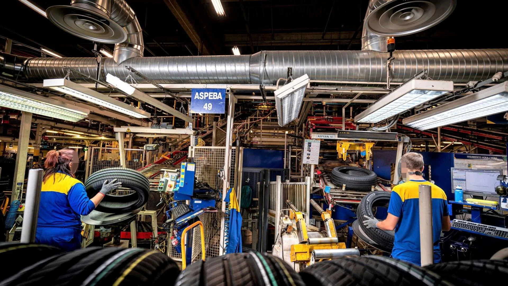
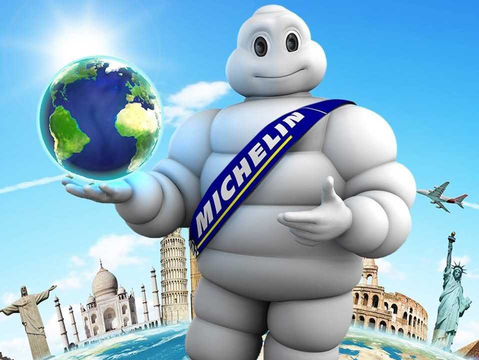
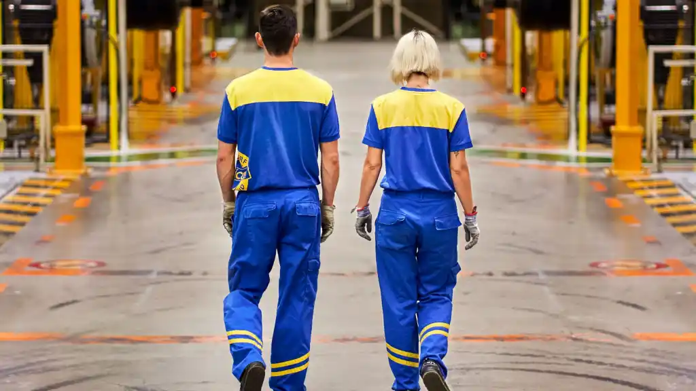

Sobre Nosotros
Michelin Vitoria es una de las fábricas más importantes de la compañía en Europa. Fundada en 1966, esta planta se ha consolidado como un referente en la fabricación de neumáticos de alta calidad. Actualmente, Michelin Vitoria produce neumáticos para camiones, autobuses y vehículos industriales, con un alto nivel de innovación y sostenibilidad.



Nuestro Compromiso
En Michelin Vitoria, apostamos por la excelencia en la producción, la sostenibilidad y el bienestar de nuestros empleados. Implementamos los principios de la Industria 4.0 para mejorar continuamente nuestros procesos y garantizar productos de máxima calidad.
Innovación y Sostenibilidad
Somos líderes en el desarrollo de neumáticos ecológicos y reciclables. Nuestra planta incorpora tecnologías avanzadas que reducen el consumo de energía y minimizan el impacto ambiental. Además, colaboramos con diversas iniciativas de movilidad sostenible.